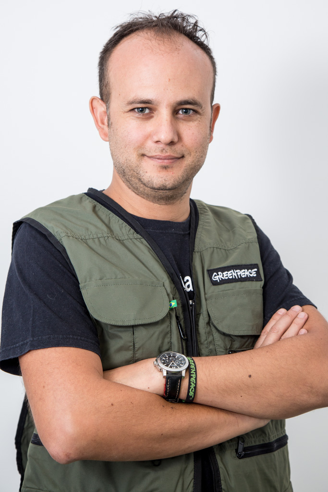

Captamos entrevista: Pedro Espinoza, Fundraising Director do Greenpeace Brasil
28 de Março de 2017 às 08:00
Captar recursos é prática recente na realidade de organizações da América Latina, afirma representante do Greenpeace
Após trabalhar por mais de uma década com captação de recursos em países da América Latina, o chileno Pedro Espinoza chegou ao Greenpeace Brasil, onde atua há cerca de um ano e meio. O cenário que encontrou por aqui não foi tão diferente daquele que viu em lugares como Argentina, Chile e México. Ele explica que o mercado latino-americano de captação de recursos é novo. E a razão é a mesma em todos os casos: o refluxo dos financiamentos internacionais nas últimas duas décadas, que obrigou organizações da sociedade civil (OSCs) a buscarem nas doações individuais uma fonte de sustentabilidade.
Em conversa com a Captamos, Espinoza falou sobre a situação do terceiro setor, as diferenças e semelhanças entre os países por onde passou e revelou algumas das estratégias de captação desenvolvidas pelo Greenpeace — que deve sua sobrevivência a milhares de doadores individuais.
Confira os principais trechos da entrevista.
Captamos: Quais as semelhanças que você encontrou nos países onde trabalhou?
Pedro Espinoza: O mercado latino-americano de captação de recursos é novo. As OSCs, até 20 anos atrás, praticamente não precisavam captar, porque os países eram subdesenvolvidos e recebiam financiamento estrangeiro. Na medida em que começam a se desenvolver economicamente, a ajuda, principalmente vinda da Europa e dos Estados Unidos, diminui. Há 20 anos, a palavra fundraising [captação de recursos] começou a aparecer na Argentina, no Chile e no Brasil. É algo bem recente as organizações terem de captar recursos. Ainda estão aprendendo e tentando. A maioria está crescendo com doadores locais, pois entende que eles são a base de sua sustentabilidade. E estão indo bem, apesar das crises econômicas que têm afetado a América Latina e, sobretudo, o Brasil.
Após trabalhar por mais de uma década com captação de recursos em países da América Latina, o chileno Pedro Espinoza chegou ao Greenpeace Brasil, onde atua há cerca de um ano e meio. O cenário que encontrou por aqui não foi tão diferente daquele que viu em lugares como Argentina, Chile e México. Ele explica que o mercado latino-americano de captação de recursos é novo. E a razão é a mesma em todos os casos: o refluxo dos financiamentos internacionais nas últimas duas décadas, que obrigou organizações da sociedade civil (OSCs) a buscarem nas doações individuais uma fonte de sustentabilidade.
Em conversa com a Captamos, Espinoza falou sobre a situação do terceiro setor, as diferenças e semelhanças entre os países por onde passou e revelou algumas das estratégias de captação desenvolvidas pelo Greenpeace — que deve sua sobrevivência a milhares de doadores individuais.
Confira os principais trechos da entrevista.
Captamos: Quais as semelhanças que você encontrou nos países onde trabalhou?
Pedro Espinoza: O mercado latino-americano de captação de recursos é novo. As OSCs, até 20 anos atrás, praticamente não precisavam captar, porque os países eram subdesenvolvidos e recebiam financiamento estrangeiro. Na medida em que começam a se desenvolver economicamente, a ajuda, principalmente vinda da Europa e dos Estados Unidos, diminui. Há 20 anos, a palavra fundraising [captação de recursos] começou a aparecer na Argentina, no Chile e no Brasil. É algo bem recente as organizações terem de captar recursos. Ainda estão aprendendo e tentando. A maioria está crescendo com doadores locais, pois entende que eles são a base de sua sustentabilidade. E estão indo bem, apesar das crises econômicas que têm afetado a América Latina e, sobretudo, o Brasil.
C: Quando começou a ocorrer o refluxo do financiamento internacional e a surgir a necessidade de captar, havia profissionais preparados para a tarefa?
PE: Eram poucos. As organizações começam a olhar para outros lugares em busca de exemplos. As pessoas que trabalhavam nas ONGs passam a aplicar esses conhecimentos dentro de seus países. É algo que também não estava na universidade, não existia uma carreira de captador profissional. A maioria que conheço na área é economista, ligada à publicidade, ao marketing. São profissionais que aplicam, no mercado das ONGs, os conhecimentos usados para vender qualquer tipo de produto ou serviço. Mas, como falei, é algo que se aprende, que se conhece trabalhando no setor. É o meu caso. Sou engenheiro comercial, uma carreira que existe só no Chile e que é uma mistura de economia, marketing e publicidade. Passei muitos anos trabalhando em organizações sociais. No Greenpeace, comecei no Chile, há quatro anos, e depois fui transferido para o México. Eu me mudei para o Brasil há um ano e meio.
PE: Eram poucos. As organizações começam a olhar para outros lugares em busca de exemplos. As pessoas que trabalhavam nas ONGs passam a aplicar esses conhecimentos dentro de seus países. É algo que também não estava na universidade, não existia uma carreira de captador profissional. A maioria que conheço na área é economista, ligada à publicidade, ao marketing. São profissionais que aplicam, no mercado das ONGs, os conhecimentos usados para vender qualquer tipo de produto ou serviço. Mas, como falei, é algo que se aprende, que se conhece trabalhando no setor. É o meu caso. Sou engenheiro comercial, uma carreira que existe só no Chile e que é uma mistura de economia, marketing e publicidade. Passei muitos anos trabalhando em organizações sociais. No Greenpeace, comecei no Chile, há quatro anos, e depois fui transferido para o México. Eu me mudei para o Brasil há um ano e meio.
C: E quais diferenças você encontrou?
PE: A diferença é que há alguns países mais desenvolvidos, como a Argentina, onde o Greenpeace tem 170 mil doadores recorrentes. Por lá, o reconhecimento da marca é muito forte, todo mundo sabe o que a gente faz. Por isso, realizar campanhas públicas e de arrecadação é bem mais fácil do que quando você tem de se explicar. No Chile, é um mercado bem menor, com 17 milhões de habitantes, a maioria em Santiago, e conseguimos transmitir o que a organização faz. No México, é um pouco mais devagar. O Greenpeace lá tem mais ou menos a mesma quantidade de doadores recorrentes que no Brasil. Aqui, temos 62 mil pessoas que, ao menos uma vez nos últimos doze meses, doaram e com quem podemos contar para que sigam doando no futuro.
C: Qual a dificuldade de captação no México?
PE: Apesar de tentarmos posicionar a marca do Greenpeace como um ator para solucionar os principais problemas ambientais no México, não conseguimos ainda despertar um interesse verdadeiro das pessoas. Elas conhecem, gostam, mas não se comprometem.
PE: A diferença é que há alguns países mais desenvolvidos, como a Argentina, onde o Greenpeace tem 170 mil doadores recorrentes. Por lá, o reconhecimento da marca é muito forte, todo mundo sabe o que a gente faz. Por isso, realizar campanhas públicas e de arrecadação é bem mais fácil do que quando você tem de se explicar. No Chile, é um mercado bem menor, com 17 milhões de habitantes, a maioria em Santiago, e conseguimos transmitir o que a organização faz. No México, é um pouco mais devagar. O Greenpeace lá tem mais ou menos a mesma quantidade de doadores recorrentes que no Brasil. Aqui, temos 62 mil pessoas que, ao menos uma vez nos últimos doze meses, doaram e com quem podemos contar para que sigam doando no futuro.
C: Qual a dificuldade de captação no México?
PE: Apesar de tentarmos posicionar a marca do Greenpeace como um ator para solucionar os principais problemas ambientais no México, não conseguimos ainda despertar um interesse verdadeiro das pessoas. Elas conhecem, gostam, mas não se comprometem.
C: Mas isso é uma questão cultural do México?
PE: É mais cultural. Além disso, lá existe um nível de corrupção impressionante. No Brasil, com a crise financeira, conseguimos crescer mais de 40% entre 2015 e 2016. Nossa principal fonte de captação continua sendo o contato direto, mas está aumentando muito a arrecadação pela internet, com cerca de mil filiações por mês, e também estamos crescendo muito pelo telemarketing.
C: A cultura de doação pouco desenvolvida é uma questão da América Latina?
PE: Depende do país. No Chile, por exemplo, a Comunidad Organizaciones Solidarias —uma espécie de Associação Brasileira de Captadores de Recursos (ABCR) com mais de mil organizações — fez, em 2008, uma campanha pública para incentivar a cultura de doação. A ideia era despertar a felicidade das pessoas pelo simples ato de doar. A campanha funcionou. Na Argentina, também vemos esse fenômeno. Aqui, observo que há cada vez mais organizações pedindo e de maneira bastante boa. Com orgulho, digo que o Greenpeace é referência no Brasil em captação, mas há várias que estão se desenvolvendo. Isso gera empatia nas pessoas, que começam a entender que existem causas diversas e que elas precisam de doações para gerarem mudanças.
PE: É mais cultural. Além disso, lá existe um nível de corrupção impressionante. No Brasil, com a crise financeira, conseguimos crescer mais de 40% entre 2015 e 2016. Nossa principal fonte de captação continua sendo o contato direto, mas está aumentando muito a arrecadação pela internet, com cerca de mil filiações por mês, e também estamos crescendo muito pelo telemarketing.
C: A cultura de doação pouco desenvolvida é uma questão da América Latina?
PE: Depende do país. No Chile, por exemplo, a Comunidad Organizaciones Solidarias —uma espécie de Associação Brasileira de Captadores de Recursos (ABCR) com mais de mil organizações — fez, em 2008, uma campanha pública para incentivar a cultura de doação. A ideia era despertar a felicidade das pessoas pelo simples ato de doar. A campanha funcionou. Na Argentina, também vemos esse fenômeno. Aqui, observo que há cada vez mais organizações pedindo e de maneira bastante boa. Com orgulho, digo que o Greenpeace é referência no Brasil em captação, mas há várias que estão se desenvolvendo. Isso gera empatia nas pessoas, que começam a entender que existem causas diversas e que elas precisam de doações para gerarem mudanças.
C: Há diferença na hora de pensar campanhas em países continentais, como o Brasil, e em nações com territórios menores?
PE: Nós tentamos fazer com que as campanhas de mobilização tenham grande impacto na população. Para isso, é preciso sair dos limites políticos de cada país. No Chile, por exemplo, fizemos uma campanha para defender os glaciares contra a mineração. Pensamos em como despertar o interesse do mundo. É preciso uma campanha no mundo todo para uma resposta forte. Conseguimos que o governo fizesse uma lei de glaciares. No Brasil, também tentamos campanhas globais. Fizemos uma para que o governo brasileiro não autorizasse a construção da hidroelétrica no rio Tapajós. E ganhamos, pois realizamos uma pressão global, todo mundo soube da questão, e o governo cancelou o projeto.
C: Você citou que, apesar da crise, tiveram aumento na base de doadores. Como conseguiram isso?
PE: Basicamente, uma mistura de coisas. A gente também está sofrendo os efeitos da crise. Apesar de a base crescer, perdemos pessoas a uma taxa maior do que o normal no Brasil e até em outros países — e aqui as taxas de retenção já são baixas. Tentamos técnicas de recaptura de doadores. Além disso, procuramos reativar doadores, pois as crises são cíclicas. Estamos trabalhando muito forte para chegar a 150 mil doadores até o final de 2019.
C: Como é o perfil do público doador em outros países e no Brasil?
PE: Há uma relação direta entre a idade e o ticket médio. As pessoas com mais idade doam mais, têm ticket médio maior e são mais fiéis — isso em vários países. Ao contrário, as com menos idade, que ainda estão começando a vida profissional, querem doar, mas não têm capacidade de arcar com os custos. Na hora de pedir, pode focar num público mais velho. Dependendo da causa, o gênero também é um fator decisivo. O Greenpeace, no mundo todo, tem mais doadoras. Também dividimos o público em perfis e pensamos estratégias para cada um deles. Os millennials, por exemplo, que nasceram entre 1980 e 1990, usam muito a tecnologia, compartilham muito informações, são muito conscientes. Não são tão bons doadores, mas fazem com que a campanha seja transmitida para muita gente. Aqueles com menos de 25 anos, a geração Y, não têm recursos, não adianta pedir. O que você pode pedir é que sejam voluntários. Eles são muito comprometidos. Tempo é o que têm para doar. E há as mulheres maiores de 35 anos, que provavelmente têm filhos, trabalham, e que são nosso público-alvo para pedir doações. Nossa base de doadores no Brasil tem uma média de idade de 39 anos, com ticket médio de R$ 40.
C: Vocês pensam campanhas segmentadas para diversos públicos?
PE: Tentamos. Com o Facebook, é possível segmentar o público e fazer disparos de publicidade para pessoas que tenham perfil para se identificar com sua causa. Mas essa é uma grande segmentação. Dentro dos diferentes grupos, dá para segmentar mais ainda. Fizemos um teste uma vez para chegar às pessoas abertamente evangélicas. Nossas publicações na mídia digital diziam: “Ajude a salvar a criação Dele”. E deram resultado.
Assista ao vídeo e veja a principal dica do Pedro sobre captação de recursos no contexto atual do Brasil:
PE: Nós tentamos fazer com que as campanhas de mobilização tenham grande impacto na população. Para isso, é preciso sair dos limites políticos de cada país. No Chile, por exemplo, fizemos uma campanha para defender os glaciares contra a mineração. Pensamos em como despertar o interesse do mundo. É preciso uma campanha no mundo todo para uma resposta forte. Conseguimos que o governo fizesse uma lei de glaciares. No Brasil, também tentamos campanhas globais. Fizemos uma para que o governo brasileiro não autorizasse a construção da hidroelétrica no rio Tapajós. E ganhamos, pois realizamos uma pressão global, todo mundo soube da questão, e o governo cancelou o projeto.
C: Você citou que, apesar da crise, tiveram aumento na base de doadores. Como conseguiram isso?
PE: Basicamente, uma mistura de coisas. A gente também está sofrendo os efeitos da crise. Apesar de a base crescer, perdemos pessoas a uma taxa maior do que o normal no Brasil e até em outros países — e aqui as taxas de retenção já são baixas. Tentamos técnicas de recaptura de doadores. Além disso, procuramos reativar doadores, pois as crises são cíclicas. Estamos trabalhando muito forte para chegar a 150 mil doadores até o final de 2019.
C: Como é o perfil do público doador em outros países e no Brasil?
PE: Há uma relação direta entre a idade e o ticket médio. As pessoas com mais idade doam mais, têm ticket médio maior e são mais fiéis — isso em vários países. Ao contrário, as com menos idade, que ainda estão começando a vida profissional, querem doar, mas não têm capacidade de arcar com os custos. Na hora de pedir, pode focar num público mais velho. Dependendo da causa, o gênero também é um fator decisivo. O Greenpeace, no mundo todo, tem mais doadoras. Também dividimos o público em perfis e pensamos estratégias para cada um deles. Os millennials, por exemplo, que nasceram entre 1980 e 1990, usam muito a tecnologia, compartilham muito informações, são muito conscientes. Não são tão bons doadores, mas fazem com que a campanha seja transmitida para muita gente. Aqueles com menos de 25 anos, a geração Y, não têm recursos, não adianta pedir. O que você pode pedir é que sejam voluntários. Eles são muito comprometidos. Tempo é o que têm para doar. E há as mulheres maiores de 35 anos, que provavelmente têm filhos, trabalham, e que são nosso público-alvo para pedir doações. Nossa base de doadores no Brasil tem uma média de idade de 39 anos, com ticket médio de R$ 40.
C: Vocês pensam campanhas segmentadas para diversos públicos?
PE: Tentamos. Com o Facebook, é possível segmentar o público e fazer disparos de publicidade para pessoas que tenham perfil para se identificar com sua causa. Mas essa é uma grande segmentação. Dentro dos diferentes grupos, dá para segmentar mais ainda. Fizemos um teste uma vez para chegar às pessoas abertamente evangélicas. Nossas publicações na mídia digital diziam: “Ajude a salvar a criação Dele”. E deram resultado.
Assista ao vídeo e veja a principal dica do Pedro sobre captação de recursos no contexto atual do Brasil:

Pedro Espinoza,
Fundraising Director do Greepeace
Pedro Espinoza,
Fundraising Director do Greepeace
Notícias mais populares
Gestão
Em agosto de 2017, a revista ÉPOCA e o Instituto Doar divulgaram a primeira ediç&...
Contexto e tendências
Criado para tornar mais transparentes as parcerias entre a administração públic...
Profissional captador
A captação de recursos é fundamental para a sustentabilidade de uma organiza&cc...